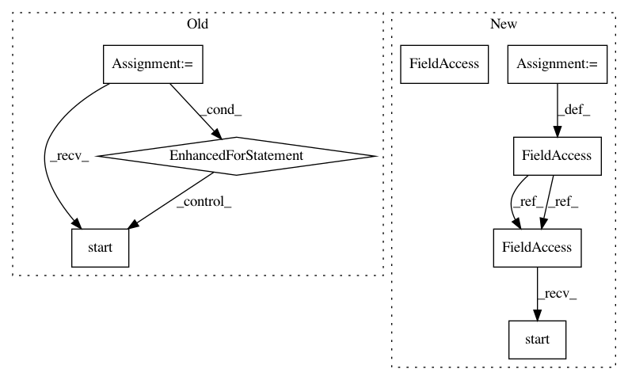

8442321b9b7a7cef7e3806b525965c36cea1549e,examples/60_search/example_parallel_manual_spawning.py,,,#,97
Before Change
processes = []
spawn_classifier = get_spawn_classifier(X_train, y_train)
for i in range(4): // set this at roughly half of your cores
p = multiprocessing.Process(
target=spawn_classifier,
args=(i, "breast_cancer"),
)
p.start()
processes.append(p)
for p in processes:
p.join()
print("Starting to build an ensemble!")
After Change
args=(cluster.scheduler_address,),
)
process_python_worker.start()
process_cli_worker = multiprocessing.Process(
target=start_cli_worker,
args=(cluster.scheduler_address,),
)
process_cli_worker.start()
// Wait a second for workers to become available
time.sleep(1)
In pattern: SUPERPATTERN
Frequency: 3
Non-data size: 8
Instances
Project Name: automl/auto-sklearn
Commit Name: 8442321b9b7a7cef7e3806b525965c36cea1549e
Time: 2020-09-25
Author: feurerm@informatik.uni-freiburg.de
File Name: examples/60_search/example_parallel_manual_spawning.py
Class Name:
Method Name:
Project Name: QUANTAXIS/QUANTAXIS
Commit Name: 8e647100ce1e791b87bfd2cf03df51bf7a12a4b1
Time: 2017-06-29
Author: yutiansut@qq.com
File Name: test/tread_queue.py
Class Name:
Method Name:
Project Name: automl/auto-sklearn
Commit Name: 8442321b9b7a7cef7e3806b525965c36cea1549e
Time: 2020-09-25
Author: feurerm@informatik.uni-freiburg.de
File Name: examples/60_search/example_parallel_manual_spawning.py
Class Name:
Method Name:
Project Name: streamlit/streamlit
Commit Name: d32ecf41fbcfd2b050cf14a76638a9e5b9e5345a
Time: 2019-10-08
Author: tconkling@gmail.com
File Name: lib/tests/streamlit/config_test.py
Class Name: ConfigTest
Method Name: setUp